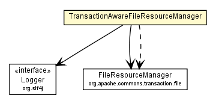

com.davidkarlsen.commonstransaction.spring
Class TransactionAwareFileResourceManager

java.lang.Object
 com.davidkarlsen.commonstransaction.spring.TransactionAwareFileResourceManager
com.davidkarlsen.commonstransaction.spring.TransactionAwareFileResourceManager
public class TransactionAwareFileResourceManager
- extends Object
A FileResourceManager which is transaction aware, thus transaction handling can be handled outside of the
manager. Suitable when transaction demarcation are declared with AOP.
- Author:
- David J. M Karlsen
| Methods inherited from class java.lang.Object |
clone, equals, finalize, getClass, hashCode, notify, notifyAll, toString, wait, wait, wait |
TransactionAwareFileResourceManager
public TransactionAwareFileResourceManager()
setFileResourceManager
public void setFileResourceManager(org.apache.commons.transaction.file.FileResourceManager fileResourceManager)
createResource
public void createResource(String resourceId)
throws org.apache.commons.transaction.file.ResourceManagerException
- Throws:
org.apache.commons.transaction.file.ResourceManagerException
createResource
public void createResource(String resourceId,
boolean overwrite)
throws org.springframework.transaction.NoTransactionException,
org.apache.commons.transaction.file.ResourceManagerException
- Throws:
org.springframework.transaction.NoTransactionException
org.apache.commons.transaction.file.ResourceManagerException
readResource
public InputStream readResource(String resourceId)
throws org.apache.commons.transaction.file.ResourceManagerException
- Throws:
org.apache.commons.transaction.file.ResourceManagerException
writeResource
public OutputStream writeResource(String resourceId)
throws org.springframework.transaction.NoTransactionException,
org.apache.commons.transaction.file.ResourceManagerException
- Throws:
org.springframework.transaction.NoTransactionException
org.apache.commons.transaction.file.ResourceManagerException
writeResource
public OutputStream writeResource(String resourceId,
boolean overwrite)
throws org.springframework.transaction.NoTransactionException,
org.apache.commons.transaction.file.ResourceManagerException
- Throws:
org.springframework.transaction.NoTransactionException
org.apache.commons.transaction.file.ResourceManagerException
deleteResource
public void deleteResource(String resourceId)
throws org.springframework.transaction.NoTransactionException,
org.apache.commons.transaction.file.ResourceManagerException
- Throws:
org.springframework.transaction.NoTransactionException
org.apache.commons.transaction.file.ResourceManagerException
Copyright © 2011. All Rights Reserved.